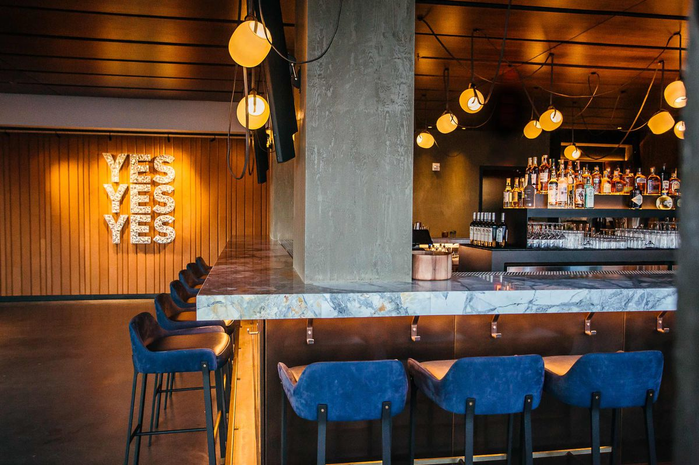
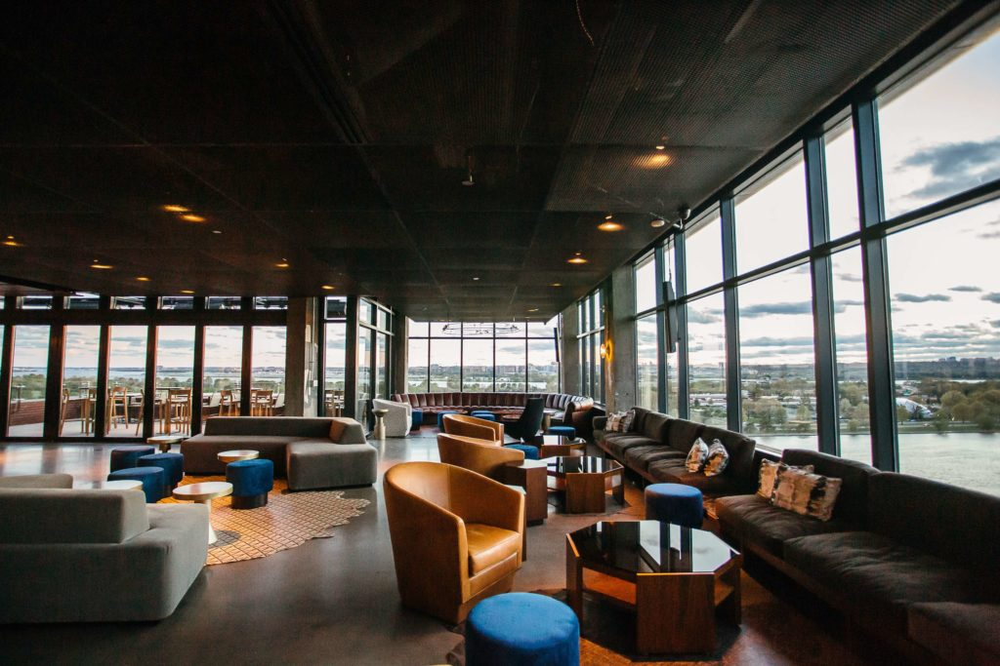

Bar Gato Negro


Gato Negro Bar nace del sentimiento de disfrutar un momento en familia y amigos, donde todos esten en un ambiente comodo y agradable tanto visual como sensorial, apreciando cada vista que brinda nuestro restaurant.